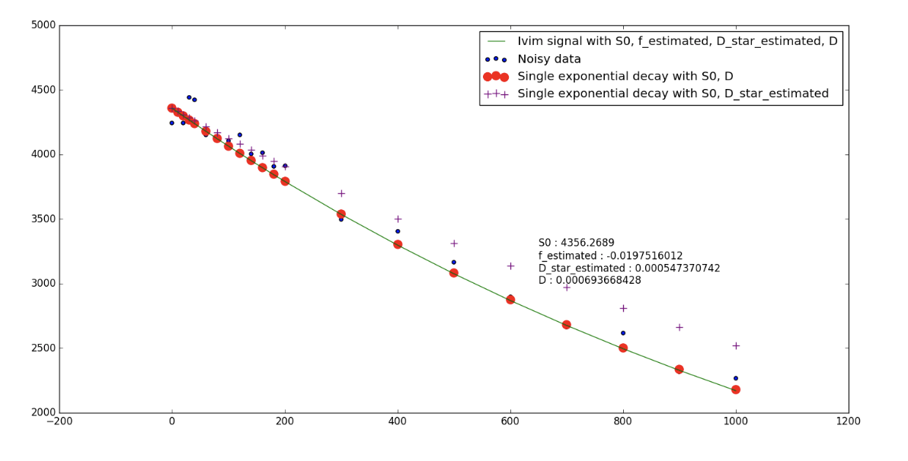
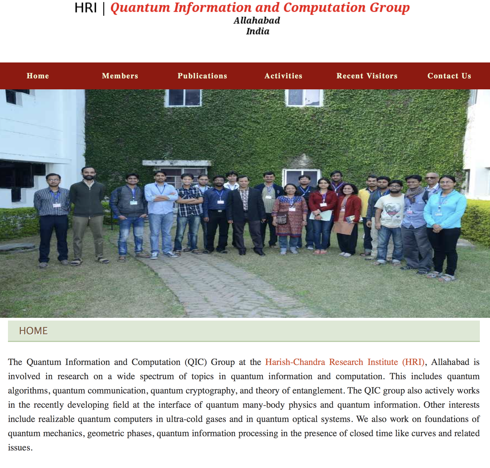

こんにちは
I am Shahnawaz. Shah - na - waz.
My nick name here is Shaan.
I am from India.
About me
Education
Interests
Experiences
Mime art (Theatre)
India
Land
Culture
Education system
Food
Music and Bollywood
Goa
North-east
Quantum Computing
(Next generation computing)
Quantum Machine Learning
Quantum Cryptography
Quantum software and simulators
QuTiP, QuMech, Microsoft Liquid, IBM Quantum Cloud
About me
Education
Birla Institute of Technology and Science Pilani
Each campus takes around 600 students out of 150 000 BITSAT applicants per year
Pilani Campus established in 1964 with help of MIT (Ford Foundation Grant)
Goa and Hyderabad campus in 2004 and 2008
About me | Education
Degree
5 year dual degree program
M.Sc. (Hons.) Physics
B.E. (Hons.) Electrical and Electronics Engineering
4 years course work, 1 year Thesis / Practice School
About me | Education | Degree
Foundational | Physics | Dual | Engineering | Thesis
About me
Interests
Quantum Information and Computing
Practical implementations of QIC
Quantum Entanglement
Quantum Cryptography
Quantum Machine Learning
About me | Interests
Data, mathematical modeling and Machine Learning
Large scale data analysis using cluster computing : PySpark
Modeling of Complex systems : Bacterial Bio film
NLP : Sentiment analysis using text
Clustering : News clustering using cosine distance and Ward’s min variance
About me
Experiences
Google Summer of Code 2016 intern
About me | Experiences | Google Summer of Code
Python Software Foundation (Dipy)
Ariel Rokem, Senior Data scientist, Washington e-Science Institute
About me | Experiences | Google Summer of Code | Python
Intra-voxel incoherent motion : MRI analysis
About me | Experiences | Google Summer of Code | MRI analysis

About me | Experiences | Google Summer of Code | Git
GitHub : Coding without boundaries
About me | Experiences
Quantum Information and Computing Group
Harish-Chandra Research Institute, Allahabad
Indian Academy of Sciences Summer Research Fellowship

About me | Experiences | Quantum Information and Computing
Bell Inequalities, Quantum Entanglement
Quantum Cryptography based on the Vernam Cipher
Device Independent Quantum Cryptography using Bell test
About me | Experiences
Computational Biology Group
Institute of Mathematical Sciences, Chennai
Prof. Sitabhra Sinha
About me | Experiences | Computational Biology
Simulated a Hodgkin-Huxley inspired model in Bacterial Biofilms
Extended a 1D differential equation model to 2D
About me | Experiences | Computational Biology
Visualization of reaction to different initial conditions
About me
Mime
Silent acts without dialouge
Shadow, UV, LED and stage based shows
14 shows since 2013, audiences of over 2000 people
About me | Mime
MIME
VIDEO
India
Land
SIZE comparison to Japan
India | Land
29 states
More than 400 Languages (20 main)
Mountains, Deserts, Tropics, Plains
India
Culture
Hinduism
Yoga
Buddhism
Sikhism
Islam
India | Education
Entrance exams : The rush to college
B.Sc. (Hons.) : 3 years (DU cutoff :)
B.Tech/B.E. : IIT-JEE, BITSAT, AIEEE
IIT : Indian Institute of Technology
BITS Pilani : Birla Institue of Technology and Science Pilani
DU, Pune, DAICT, IIIT etc etc
India | Education
Higher education
India
Food
North Indian
Quantum Computing
(Next generation research)
Quantum Machine Learning
Quantum Cryptography
Quantum software and simulators